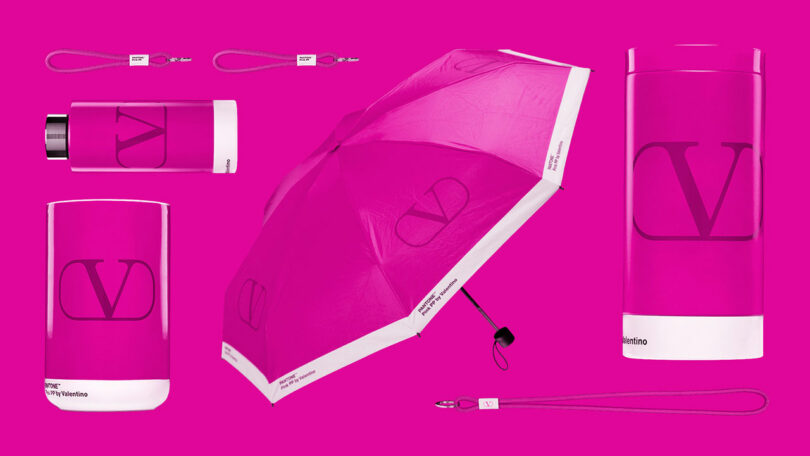
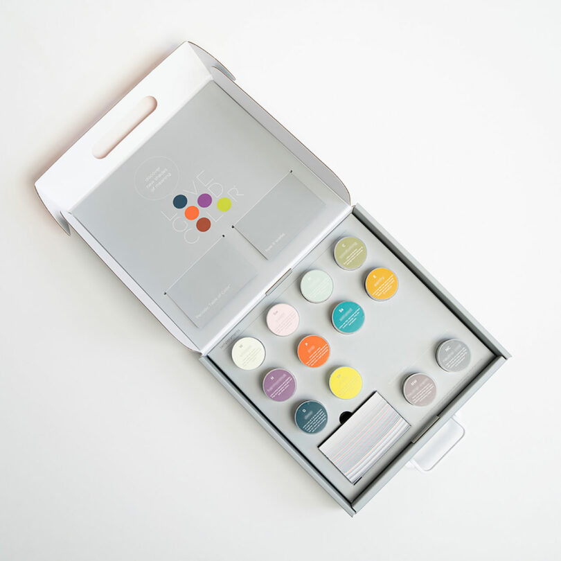
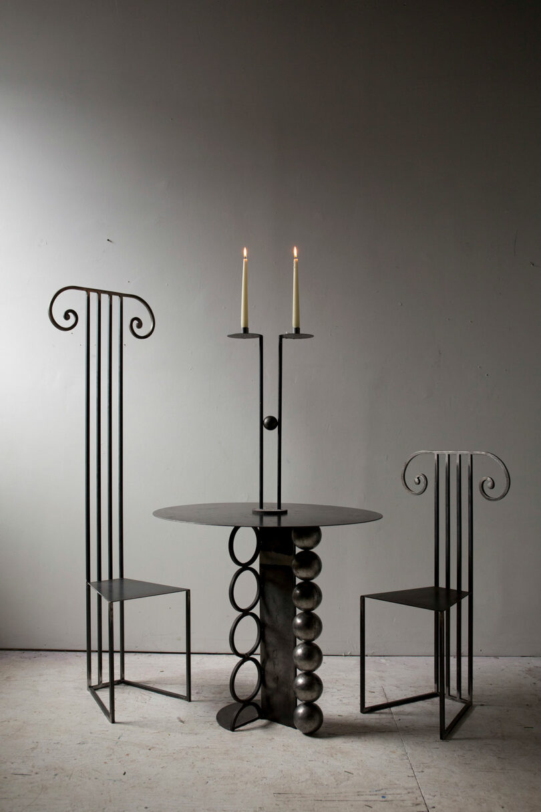
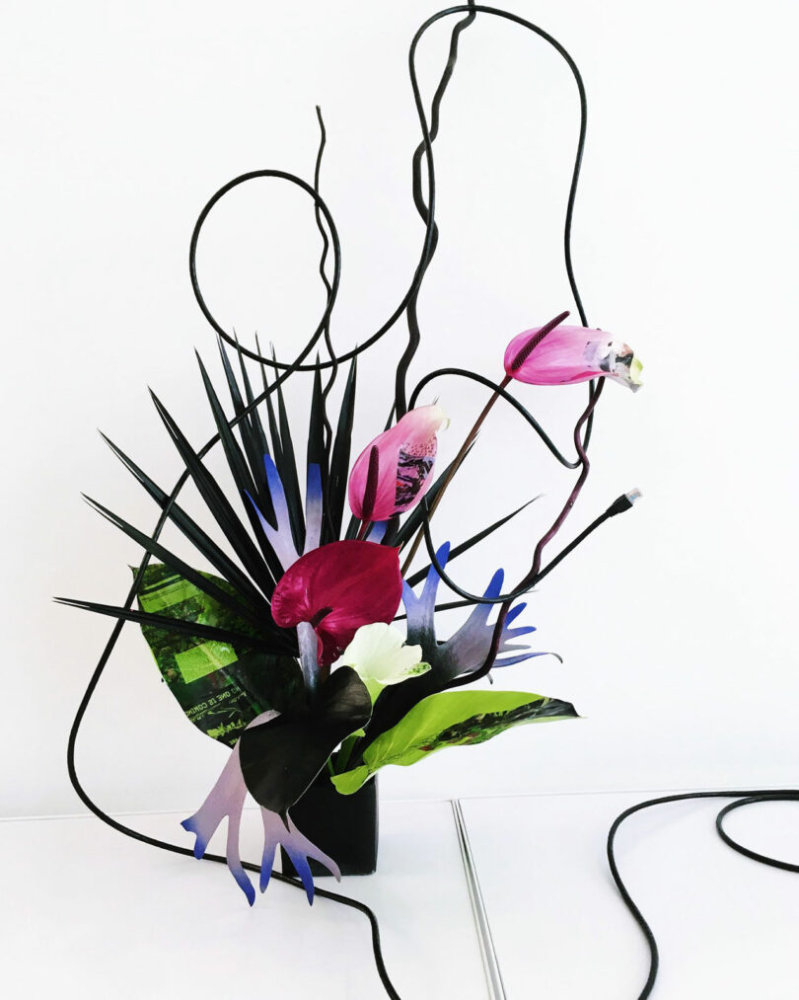

HOME FURNISHINGS
Take 5: A Designer Vessel, Experimental Art, Color Theory + More
Twice a month we're inviting one of the Design Mik team members to share five personal favorites - an opportunity for each of us to reveal the sort of designs we love and appreciate in our own lives from a more personal perspective. Managing Editor Joseph Sgambati III shares this week for our Take 5 series.
11.17.23 | By Joseph Sgambati III

Regina Durante Jestrow's Vulnerability & Resilience 2
1. FIBRATION Group Exhibition
Sewn into the day lit public volume of Shigeru Ban's unassuming “Metal Shutter House” tower is L'SPACE gallery, the new headquarters for New York Textile Month (NYTM) and host to its recent event FIBRATION - a group exhibition presenting a patchwork of seminal pieces from artists embracing textiles as their primary medium. The showcase revealed a post-pandemic yearning for tactility that cannot be derived from most two-dimensional artifacts or other forms of conventional fine art.
2. Pantone Color Institute and Valentino: Pink PP
My earliest discernible memory of color - and graphic design - dates back to childhood when I watched my mother change the commercial printer inks on equipment for her graphic design business. I vividly recall the fluids' deep hues and the slight vinegar odor they omitted, not to mention my amusement with Pantone Formula Guides. So when Pantone Color Institute and Valentino launched this capsule collection I knew I had to own a piece of graphic design history - my purchase included the thermo steel drinking bottle and pencil cup.
The LOVE GOOD COLOR® Toolkit
3. LOVE GOOD COLOR
The brainchild of award-winning designer and color savant Laura Guido-Clark, LOVE GOOD COLOR is a proprietary methodology that discerns color's influence on consumer and designer choices through emotions. Her practice empowers designers to use impact when considering color for product or environments.
The Tall Column Chairs by Micah Rosenblatt are available in 38 or 60 inch seat back heights.
4. Tall Column Chairs by Micah Rosenblatt Design
I delight in the silhouettes of Micah Rosenblatt's Column Chairs. His use of metal to trace the outline of the form rather than its volume pays homage to the Ionic order while being grounded in the contemporary. The welded steel chairs are available in two sizes and when positioned down a long dining table give the illusion of a colonnade.
5. Botanical Studio WIFE NYC
A designer myself, I am constantly in awe of the brilliant imagination exercised by my peers - especially when it is daring or defiant. Sophie Parker is the Brooklyn-based artist and creative director behind these works specializing in plant-based compositions. The mix of natural ephemera, paint, and the passage of time makes each arrangement's fleeting existence that much more romantic.
With professional degrees in architecture and journalism, Joseph has a desire to make living beautifully accessible. His work seeks to enrich the lives of others with visual communication and storytelling through design. A regular contributor to titles under the SANDOW Design Group, including Luxe and Metropolis, Joseph serves the Design Milk team as their Managing Editor. When not practicing, he teaches visual communication, theory, and design. The New York-based writer has also contributed to exhibitions hosted by the AIA New York's Center for Architecture and Architectural Digest, and recently published essays and collage illustrations with Proseterity, a literary publication.
You can follow Joseph Sgambati III on Instagram, and Linkedin. Read all of Joseph Sgambati III's posts.